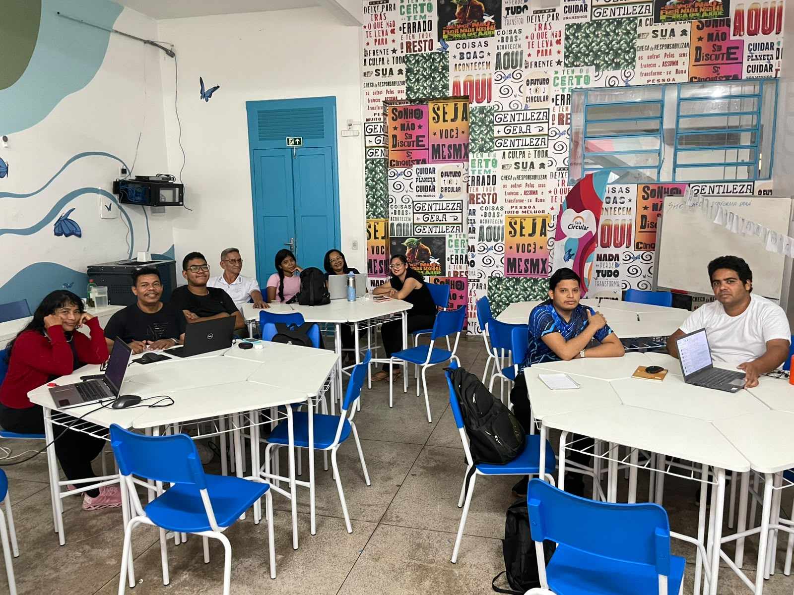

Fundação do Liceu Paraense
Em 28 de junho de 1841, nasce a instituição com a missão de estruturar o ensino secundário e humanístico na Província do Grão-Pará.
Preservação do patrimônio histórico do CEPC por meio da Tecnologia Sustentável e Inclusiva — um projeto desenvolvido pela turma do Curso Técnico em Informática.
Fundado em 28 de junho de 1841 originalmente como Liceu Paraense, o Colégio Estadual Paes de Carvalho (CEPC) consolidou-se como uma das instituições públicas de ensino mais antigas e relevantes em atividade no Brasil.
No final do século XIX, recebeu o nome de Dr. José Paes de Carvalho, médico, abolicionista, republicano e ex-governador do Pará. Seu imponente edifício de estilo neoclássico, situado na Praça Saldanha Marinho, no centro histórico de Belém, é palco da formação de gerações de cientistas, escritores, artistas e profissionais técnicos.
Filtre os marcos históricos para acompanhar a trajetória quase bicentenária do colégio.
Em 28 de junho de 1841, nasce a instituição com a missão de estruturar o ensino secundário e humanístico na Província do Grão-Pará.
Após a Proclamação da República, o colégio passa a homenagear José Paes de Carvalho, figura central na política, saúde e abolição no estado.
O prédio neoclássico na Praça Saldanha Marinho torna-se referência intelectual de Belém, formando grandes nomes da literatura, medicina, direito e artes.
A escola incorpora a educação profissional e tecnológica, preparando jovens para áreas estratégicas como Informática, Redes e Desenvolvimento de Sistemas.
Celebração do sesquicentenário mais 35 anos unindo preservação histórica, inclusão digital e soluções sustentáveis criadas pelos próprios estudantes.
Desenvolvimento Front-End nativo (HTML5, CSS3 e JavaScript puro) sem bibliotecas pesadas, garantindo carregamento rápido e baixo consumo energético.
Estrutura semântica compatível com leitores de tela, controle dinâmico de fonte, modo de alto contraste e design 100% responsivo (Mobile-First).
Substituição de materiais gráficos impressos por divulgação digital contínua via QR Code, preservando a memória escolar sem gerar resíduos.
As imagens alternam automaticamente a cada 10 segundos ou podem ser navegadas manualmente.

Localizado na Praça Saldanha Marinho, o edifício histórico é um símbolo da arquitetura e da educação pública paraense.

Quase dois séculos formando intelectuais, cientistas, escritores e lideranças que marcaram a história da Amazônia.

O ensino integrado prepara os jovens para o desenvolvimento de software, redes e soluções digitais de impacto social.

Tecnologia, inclusão e sustentabilidade aplicadas pelos estudantes para celebrar os 185 anos da instituição.

é muito mais do que uma roupa escolar. Ele se tornou um símbolo de tradição, disciplina, identidade e pertencimento, atravessando gerações de estudantes em Belém..

A banda é uma parte muito importante da identidade do colégio. Sua história está ligada aos desfiles cívicos, à Semana da Pátria, ao Dia da Raça e às competições entre bandas escolares.
Responda às 5 perguntas e teste seus conhecimentos sobre a história do colégio.